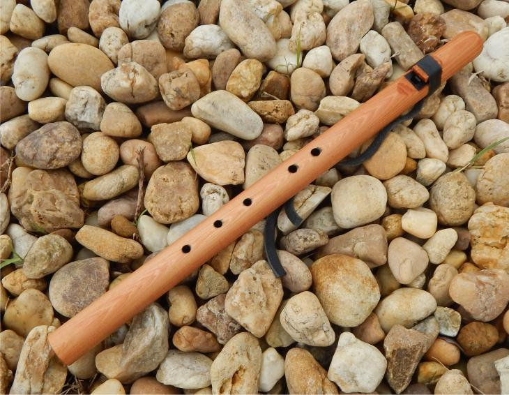

Beginner Flutes
If you've never played a flute before, these are your starting point — forgiving to learn, beautiful to play.
 On Sale
On Sale
Old-Style Eastern Red Cedar 5-Hole Flute
Charlie's classic old-style design — open mouthpiece, warm cedar grain, easy to hold and play from day one. The flute that started thousands of journeys.
 On Sale
On Sale
Beginner 5-Hole Flute — High B (Hardwood Poplar)
A rich chocolate-brown stained poplar with a natural bear totem. The High B tuning makes it one of the easiest flutes to learn — bright, responsive, and musical from the first breath.
 Sale
Sale
Blue Bear "Googol" Flute in G
A uniquely shaped Blue Bear original — the "Googol" is one of Charlie's signature designs. Tuned in G, it plays warm and full with a personality all its own.
Cedar Flutes

On SaleWestern Cedar Native American Style Flute
Lighter in color with a slightly brighter tone than eastern red cedar. Western cedar flutes have a clarity and depth that sings beautifully in the lower registers.
Big Savings
Eastern Red Cedar Flutes — Full Range
Available in Low D (24"), Low E (23"), Low A, Low B, and standard registers. Eastern red cedar's warm, resinous voice carries the soul of the Native American flute tradition.

Cherry Old-Style Native American Style Flute
Cherry wood brings a warm reddish tone and a mellow voice. The old-style design keeps the spirit of traditional flute making alive in every note.
Exotic Hardwood Flutes

African Yellowheart Old-Style Flute
Brilliant golden-yellow grain with a bright, projecting voice. Yellowheart is dense and resonant — this flute commands attention both visually and musically.
Old-Style Purpleheart Native American Flute
One of the most striking woods in nature — deep violet-purple grain with a clear, bell-like tone. Purpleheart is as unforgettable to hear as it is to hold.
Old-Style Padauk Native American Flute
Deep orange-red African padauk with a warm, rich resonance. Dense grain means excellent projection — this flute fills a room with ease.
Drone Flutes
 Cedar Drones
Cedar Drones
Eastern Red Cedar Drone Flutes
Two chambers: one for melody, one for a sustained harmonic drone. The result is a full, meditative soundscape that no single-chamber flute can replicate.
 Backpack Drone
Backpack Drone
Small Native American Style Backpacker Drone
All the harmonic depth of a full drone flute in a travel-ready size. Take this one into the mountains, on the trail, or anywhere the music calls you.
 Special Design
Special Design
Aztec, Mayan or Olmec Temple Drone Flutes
Ceremonial-inspired drone flutes built to evoke ancient Mesoamerican soundscapes. A truly unique instrument for players drawn to deep history and rare tones.
Blue Bear Modern Series
Charlie's decades of acoustic design, now in precision 3D-printed form. Same playability. More consistent. More accessible.
 Modern Series
Modern Series
Blue Bear Modern Series 5-Hole Flute
The classic Blue Bear 5-hole design in precision-printed form. Available with totems. Great for players who want consistency and durability without sacrificing Charlie's acoustic signature.
Modern Drone
Blue Bear Modern Series Drone Flute
Drone flute dual-chamber design in precision-printed form. Same harmonic depth as the handcrafted versions, at a more accessible price point with a turtle totem option.
Western Cedar Flute Making Kit
Learn the art of flute making from the ground up. Charlie's kit includes everything you need to shape, tune, and finish your own Native American style flute from raw cedar.
Accessories & More

The Ultimate Native American Flute Bag
Shoulder strap, padded protection, multiple compartments — built to carry your flutes on the road, in the woods, or to every jam session.

Small Cedar Eagle/Hawk Call
Handcrafted cedar whistle that produces authentic eagle and hawk sounds. A remarkable instrument for ceremony, performance, or nature observation.
Imitation Bear Fat — All-Natural Flute Care Wax
Traditional all-natural flute care wax. Protects and conditions the wood, maintains the bore, and keeps your flute playing its best for decades.